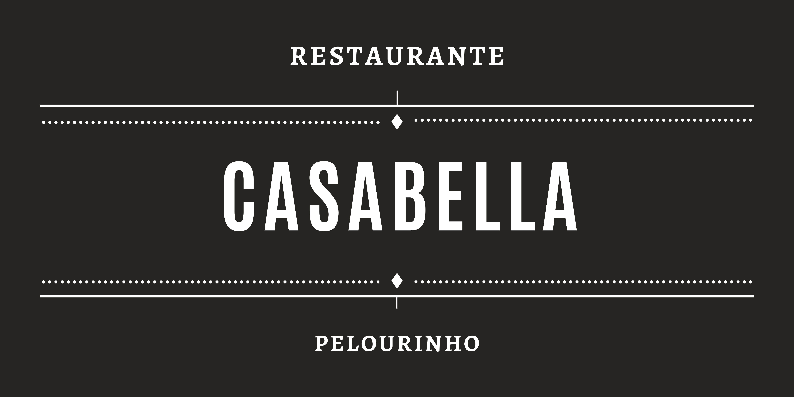
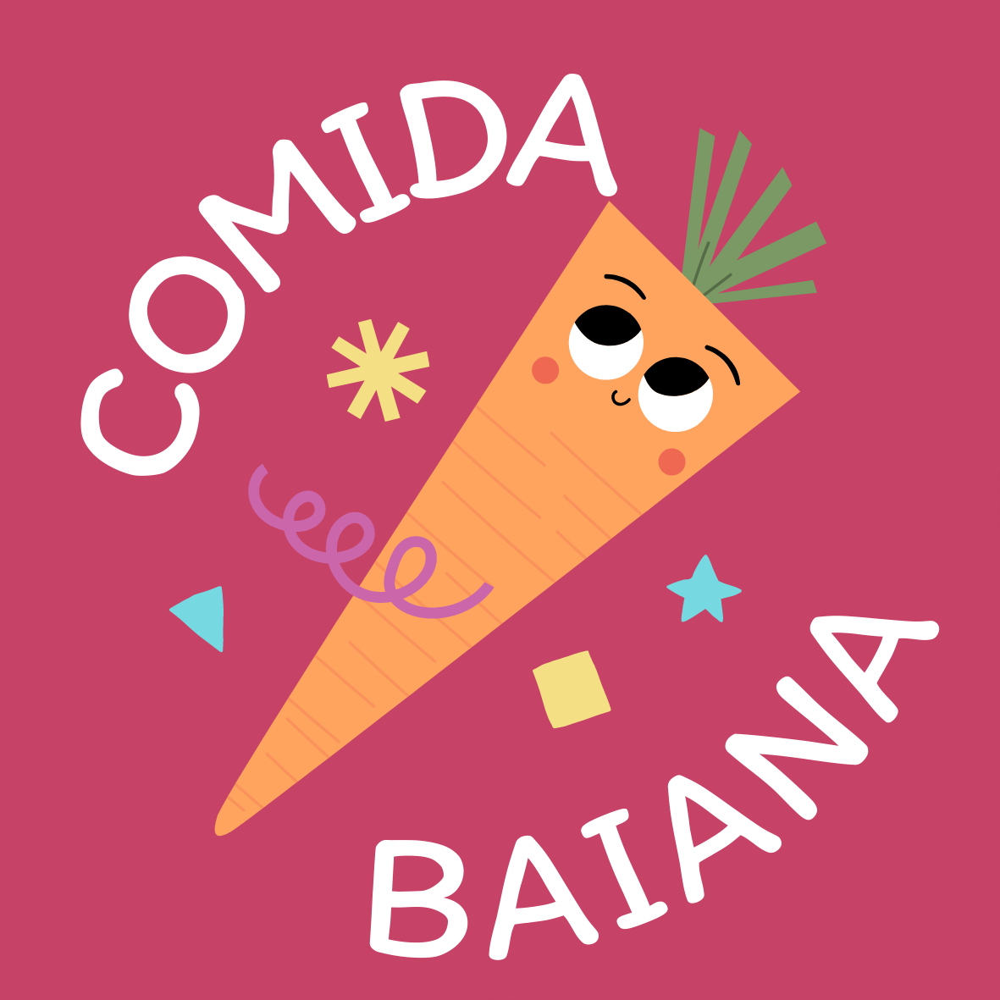
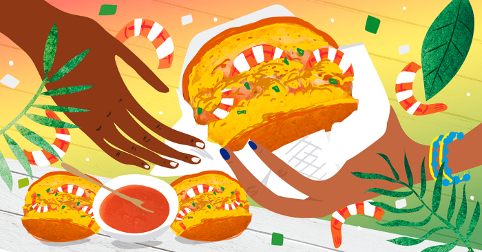
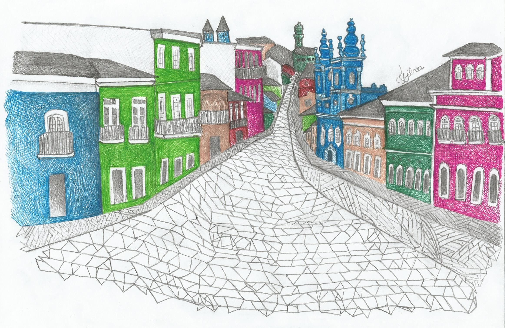

Esse restaurante foi fundado por Emily Menezes a fim de proporcionar a todos os públicos
as iguarias do Estado da Bahia,
o projeto tem sido discutido e planejado há alguns meses
e o ínicio mais eficaz, a princípio, foi pôr as mãos na obra através
desse site.

Primeiramente, na saída do colégio - há uns 2 ou 3 anos atrás - eu fui entrevistada por
um grupo de turistas que me questionou as
atrações principais da Bahia, solicitou conselhos
sobre restaurantes, e possíveis locais para se visitar e isso despertou em mim o
desejo em
ajudar, iniciarei fundando esse restaurante - que reúne TODAS as delicias Baianas - e em
breve tem novidade pra vocês.

É de nossa prioridade surpreender cada um de vocês, seremos eternamente gratos pela
confiança em que nos é depositada,
faremos o possível para proporcionar a você, cliente,
a melhor refeição de suas vidas.

Além de se deliciar com às especiarias baianas, é possível receber conselhos da nossa
equipe dos principais pontos turísticos da nossa
cidade - isso inclui um guia completo - para
que o seu passeio seja inesquecível. Portanto, sejam bem vindos ao restaurante CasaBella.